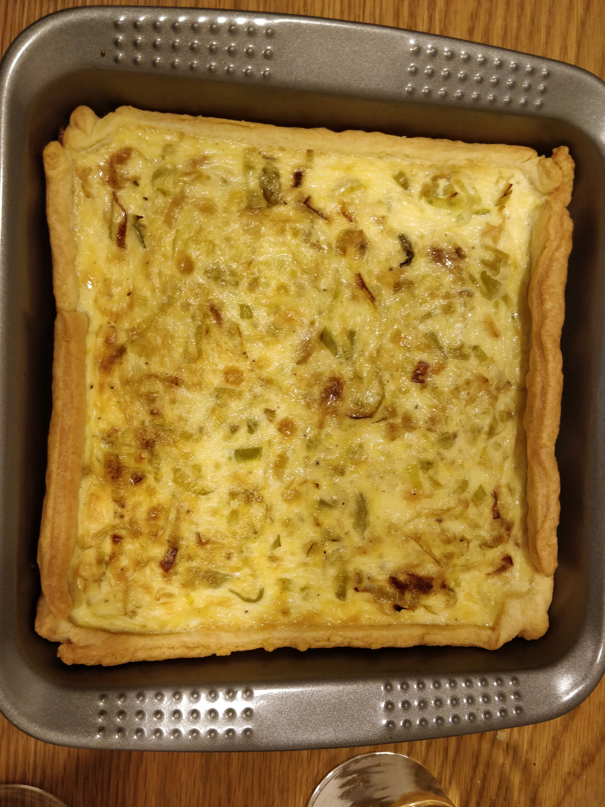

Quiche de alho-poró
tags: alho-poro forno francesa
Ingredientes
- 1 “folha” de massa podre pronta
- 50g de gruyère ralado
- 2 alhos-porós grandes
- 30g de manteiga
- 3 ovos
- 200ml de leite
- 200ml de creme de leite fresco
- Sal, noz moscada e primenta do reino a gosto
Mise en place
- Pré-aquecer o forno em 180°C
- Lavar bem o alho-poró e corta-lo em rodela
Modo de preparo
- Em uma frigideira, derreter a manteiga com um pouco de azeite e então colocar o alho. Misture bem e deixe cozinhar em fogo baixo por 15 minutos com a frigideira tampada. Quando terminar, coloque um pouco de sal.
- Desenrole a massa na forma e jogue o queijo por cima.
- Em uma vasilha, coloque os ovos, o leite, o creme de leite, sal, noz moscada e pimenta do reino e mexa bastante com um fuet.
- Finalmente, coloque o alho-poró na forma e então o creme. Se quiser, pode jogar por cima um pouco mais de queijo para gratinar.
- Asse por 35 ou até dourar.
Comentários
Serve 4 pessoas. Sugestão de acompanhamento é salada ou batatinhas no forno.
Comentários sobre a receita
Lindo!